Code 2: Exploratory Analysis of Bayesian Models
Contenido
Code 2: Exploratory Analysis of Bayesian Models¶
This is a reference notebook for the book Bayesian Modeling and Computation in Python
The textbook is not needed to use or run this code, though the context and explanation is missing from this notebook.
If you’d like a copy it’s available from the CRC Press or from Amazon. ``
%matplotlib inline
import arviz as az
import matplotlib.pyplot as plt
import numpy as np
import pymc3 as pm
from scipy import stats
import theano.tensor as tt
az.style.use("arviz-grayscale")
plt.rcParams['figure.dpi'] = 300
np.random.seed(5201)
Understanding Your Assumptions¶
Figure 2.2¶
half_length = 3.66 # meters
penalty_point = 11 # meters
def Phi(x):
"""Calculates the standard normal cumulative distribution function."""
return 0.5 + 0.5 * tt.erf(x / tt.sqrt(2.0))
ppss = []
sigmas_deg = [5, 20, 60]
sigmas_rad = np.deg2rad(sigmas_deg)
for sigma in sigmas_rad:
with pm.Model() as model:
σ = pm.HalfNormal("σ", sigma)
α = pm.Normal("α", 0, σ)
p_goal = pm.Deterministic("p_goal", 2 * Phi(tt.arctan(half_length / penalty_point) / σ) - 1)
pps = pm.sample_prior_predictive(250)
ppss.append(pps)
fig, axes = plt.subplots(1, 3, subplot_kw=dict(projection="polar"), figsize=(10, 4))
max_angle = np.arctan(half_length/penalty_point)
for sigma, pps, ax in zip(sigmas_deg, ppss, axes):
cutoff = pps["p_goal"] > 0.1
cax = ax.scatter(pps["α"][cutoff], np.ones_like(pps["α"][cutoff]), c=pps["p_goal"][cutoff],
marker=".", cmap="viridis_r", vmin=0.1)
ax.fill_between(np.linspace(-max_angle, max_angle, 100), 0, 1.01, alpha=0.25)
ax.set_yticks([])
ax.set_title(f"$\sigma = \mathcal{{HN}}({sigma})$")
ax.plot(0,0, 'o')
fig.colorbar(cax, extend="min", ticks=[1, 0.5, 0.1], shrink=0.7, aspect=40)
plt.savefig("img/chp02/prior_predictive_distributions_00.png", bbox_inches="tight")

Figure 2.3¶
from scipy.special import expit
fig, axes = plt.subplots(1, 3, figsize=(10, 4), sharex=True, sharey=True)
axes = np.ravel(axes)
for dim, ax in zip([2, 5, 20], axes):
β = np.random.normal(0, 1, size=(10000, dim))
X = np.random.binomial(n=1, p=0.75, size=(dim, 500))
az.plot_kde(expit(β @ X).mean(1), ax=ax)
ax.set_title(f"{dim} predictors")
ax.set_xticks([0, 0.5, 1])
ax.set_yticks([0, 1, 2])
fig.text(0.34, -0.075, size=18, s="mean of the simulated data")
plt.savefig("img/chp02/prior_predictive_distributions_01.png", bbox_inches="tight")

Understanding Your Predictions¶
Figure 2.4¶
Y = stats.bernoulli(0.7).rvs(100)
with pm.Model() as model:
θ = pm.Beta("θ", 1, 1)
y_obs = pm.Binomial("y_obs",n=1, p=θ, observed=Y)
trace_b = pm.sample(1000)
<ipython-input-6-2e8727eee630>:5: FutureWarning: In v4.0, pm.sample will return an `arviz.InferenceData` object instead of a `MultiTrace` by default. You can pass return_inferencedata=True or return_inferencedata=False to be safe and silence this warning.
trace_b = pm.sample(1000)
Auto-assigning NUTS sampler...
Initializing NUTS using jitter+adapt_diag...
Multiprocess sampling (4 chains in 4 jobs)
NUTS: [θ]
100.00% [8000/8000 00:01<00:00 Sampling 4 chains, 0 divergences]
Sampling 4 chains for 1_000 tune and 1_000 draw iterations (4_000 + 4_000 draws total) took 2 seconds.
pred_dist = pm.sample_posterior_predictive(trace_b, 1000, model=model)["y_obs"]
/u/32/martino5/unix/anaconda3/envs/pymcv3/lib/python3.9/site-packages/pymc3/sampling.py:1689: UserWarning: samples parameter is smaller than nchains times ndraws, some draws and/or chains may not be represented in the returned posterior predictive sample
warnings.warn(
100.00% [1000/1000 00:00<00:00]
_, ax = plt.subplots(1, 2, figsize=(12, 4), constrained_layout=True)
az.plot_dist(pred_dist.sum(1),
hist_kwargs={"color":"C2"}, ax=ax[0])
ax[0].axvline(Y.sum(), color="C4", lw=2.5);
ax[0].axvline(pred_dist.sum(1).mean(), color="k", ls="--")
ax[0].set_yticks([])
ax[0].set_xlabel("number of success")
pps_ = pred_dist.mean(1)
ax[1].plot((np.zeros_like(pps_), np.ones_like(pps_)), (1-pps_, pps_), 'C1', alpha=0.01)
ax[1].plot((0, 1), (1-Y.mean(), Y.mean()), 'C4', lw=2.5)
ax[1].plot((0, 1), (1-pps_.mean(), pps_.mean()), 'k--')
ax[1].set_xticks((0,1))
ax[1].set_xlabel("observed values")
ax[1].set_ylabel("probability")
plt.savefig("img/chp02/posterior_predictive_check.png")
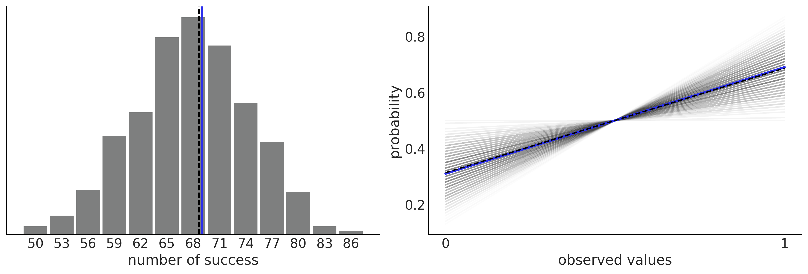
Figure 2.5¶
idata = az.from_dict(posterior_predictive={"y":pred_dist.reshape(2, 500, 100)}, observed_data={"y":Y})
_, ax = plt.subplots(1, 2, figsize=(10, 4))
az.plot_bpv(idata, kind="p_value", ax=ax[0])
ax[0].legend([f"bpv={(Y.mean() > pred_dist.mean(1)).mean():.2f}"], handlelength=0)
az.plot_bpv(idata, kind="u_value", ax=ax[1])
ax[1].set_yticks([])
ax[1].set_xticks([0., 0.5, 1.])
plt.savefig("img/chp02/posterior_predictive_check_pu_values.png")
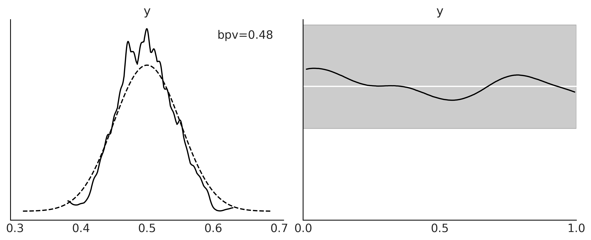
Figure 2.6¶
_, ax = plt.subplots(1, 2, figsize=(10, 4))
az.plot_bpv(idata, kind="t_stat", t_stat="mean", ax=ax[0])
ax[0].set_title("mean")
az.plot_bpv(idata, kind="t_stat", t_stat="std", ax=ax[1])
ax[1].set_title("standard deviation")
ax[1].set_xticks([0.32, 0.41, 0.5])
plt.savefig("img/chp02/posterior_predictive_check_tstat.png")
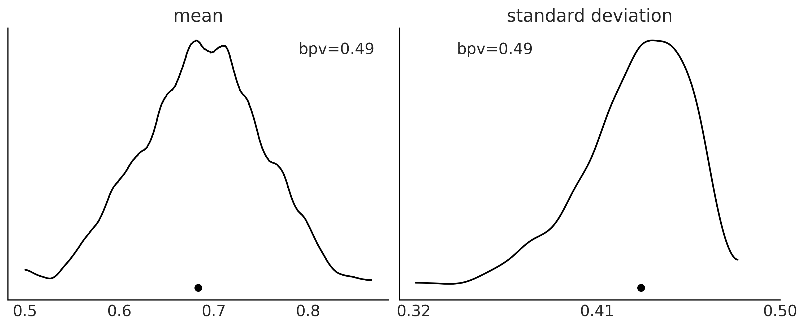
Figure 2.7¶
n_obs = 500
samples = 2000
y_obs = np.random.normal(0, 1, size=n_obs)
idata1 = az.from_dict(posterior_predictive={"y":np.random.normal(0.5, 1, size=(1, samples, n_obs))},
observed_data={"y":y_obs})
idata2 = az.from_dict(posterior_predictive={"y":np.random.normal(0, 2, size=(1, samples, n_obs))},
observed_data={"y":y_obs})
idata3 = az.from_dict(posterior_predictive={"y":np.random.normal(0, 0.5, size=(1, samples,n_obs))},
observed_data={"y":y_obs})
idata4 = az.from_dict(posterior_predictive={"y":np.concatenate(
[np.random.normal(-0.25, 1, size=(1, samples//2, n_obs)),
np.random.normal(0.25, 1, size=(1, samples//2, n_obs))]
)},
observed_data={"y":y_obs})
idatas = [idata1,
idata2,
idata3,
idata4,
]
_, axes = plt.subplots(len(idatas), 3, figsize=(10, 10), sharex="col")
for idata, ax in zip(idatas, axes):
az.plot_ppc(idata, ax=ax[0], color="C1", alpha=0.01, mean=False, legend=False)
az.plot_kde(idata.observed_data["y"], ax=ax[0], plot_kwargs={"color":"C4", "zorder":3})
ax[0].set_xlabel("")
az.plot_bpv(idata, kind="p_value", ax=ax[1])
az.plot_bpv(idata, kind="u_value", ax=ax[2])
ax[2].set_yticks([])
ax[2].set_xticks([0., 0.5, 1.])
for ax_ in ax:
ax_.set_title("")
plt.savefig("img/chp02/posterior_predictive_many_examples.png")
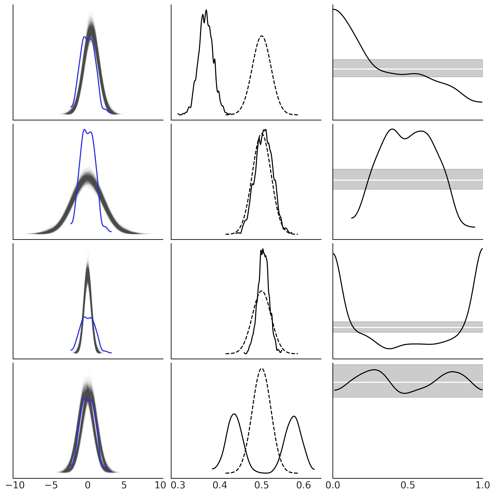
Diagnosing Numerical Inference¶
Code 2.1¶
np.random.seed(5201)
good_chains = stats.beta.rvs(2, 5,size=(2, 2000))
bad_chains0 = np.random.normal(np.sort(good_chains, axis=None), 0.05,
size=4000).reshape(2, -1)
bad_chains1 = good_chains.copy()
for i in np.random.randint(1900, size=4):
bad_chains1[i%2:,i:i+100] = np.random.beta(i, 950, size=100)
chains = {"good_chains":good_chains,
"bad_chains0":bad_chains0,
"bad_chains1":bad_chains1}
Code 2.2¶
az.ess(chains)
<xarray.Dataset>
Dimensions: ()
Data variables:
good_chains float64 4.389e+03
bad_chains0 float64 2.436
bad_chains1 float64 111.1xarray.Dataset
- good_chains()float644.389e+03
array(4388.88671262)
- bad_chains0()float642.436
array(2.43611073)
- bad_chains1()float64111.1
array(111.05854073)
Code 2.3 and Figure 2.8¶
_, axes = plt.subplots(2, 3, figsize=(12, 6), sharey=True, sharex=True)
az.plot_ess(chains, kind="local", ax=axes[0])
az.plot_ess(chains, kind="quantile", ax=axes[1])
for ax_ in axes[0]:
ax_.set_xlabel("")
for ax_ in axes[1]:
ax_.set_title("")
for ax_ in axes[:,1:].ravel():
ax_.set_ylabel("")
plt.ylim(-100, 5000)
plt.savefig("img/chp02/plot_ess.png")
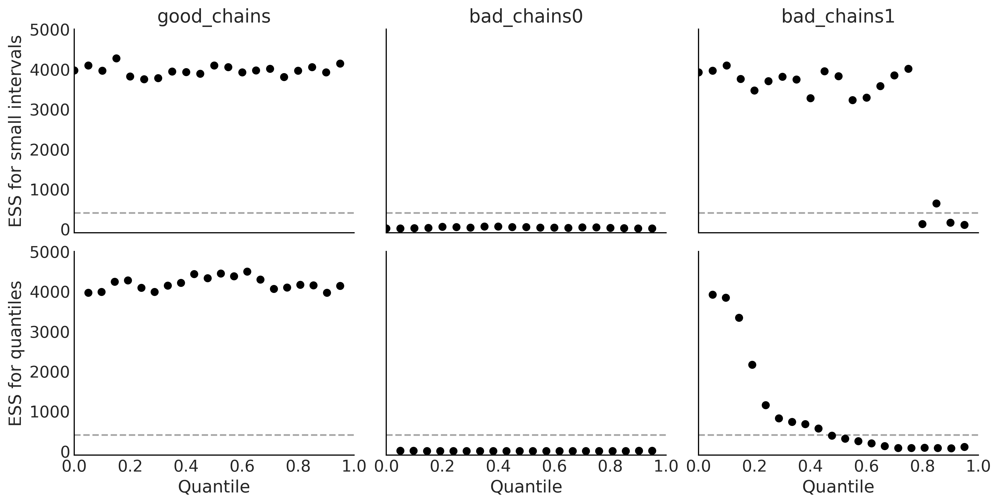
Code 2.4¶
az.rhat(chains)
<xarray.Dataset>
Dimensions: ()
Data variables:
good_chains float64 1.0
bad_chains0 float64 2.408
bad_chains1 float64 1.033xarray.Dataset
- good_chains()float641.0
array(1.00045889)
- bad_chains0()float642.408
array(2.40799304)
- bad_chains1()float641.033
array(1.032586)
Code 2.5¶
az.mcse(chains)
<xarray.Dataset>
Dimensions: ()
Data variables:
good_chains float64 0.002381
bad_chains0 float64 0.1077
bad_chains1 float64 0.01781xarray.Dataset
- good_chains()float640.002381
array(0.00238092)
- bad_chains0()float640.1077
array(0.10773127)
- bad_chains1()float640.01781
array(0.01781184)
Code 2.6 and Figure 2.9¶
_, axes = plt.subplots(1, 3, figsize=(12, 4), sharey=True)
az.plot_mcse(chains, ax=axes)
for ax_ in axes[1:]:
ax_.set_ylabel("")
ax_.set_ylim(0, 0.15)
plt.savefig("img/chp02/plot_mcse.png")

Code 2.7¶
az.summary(chains, kind="diagnostics")
| mcse_mean | mcse_sd | ess_bulk | ess_tail | r_hat | |
|---|---|---|---|---|---|
| good_chains | 0.002 | 0.002 | 4389.0 | 3966.0 | 1.00 |
| bad_chains0 | 0.108 | 0.088 | 2.0 | 11.0 | 2.41 |
| bad_chains1 | 0.018 | 0.013 | 111.0 | 105.0 | 1.03 |
Code 2.8 and Figure 2.10¶
az.plot_trace(chains)
plt.savefig("img/chp02/trace_plots.png")
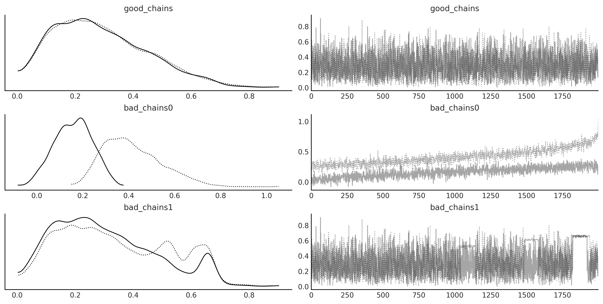
Code 2.9 and Figure 2.11¶
az.plot_autocorr(chains, combined=True, figsize=(12, 4))
plt.savefig('img/chp02/autocorrelation_plot.png')
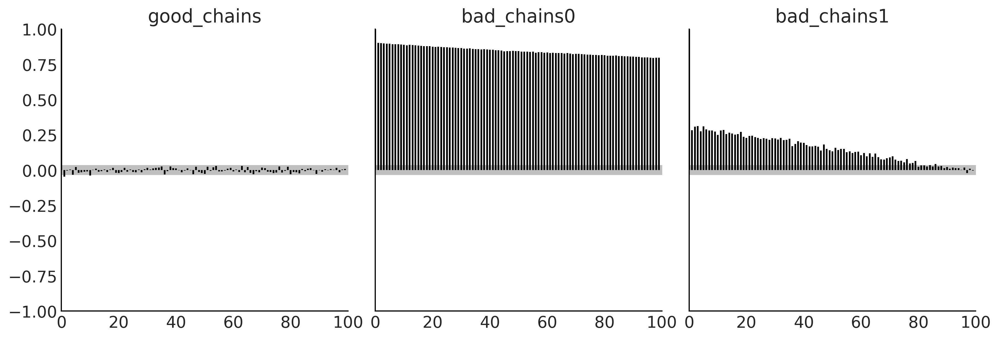
Code 2.10 and Figure 2.12¶
_, axes = plt.subplots(1, 3, figsize=(12, 4))
az.plot_rank(chains, kind="bars", ax=axes)
for ax_ in axes[1:]:
ax_.set_ylabel("")
ax_.set_yticks([])
plt.savefig('img/chp02/rank_plot_bars.png')
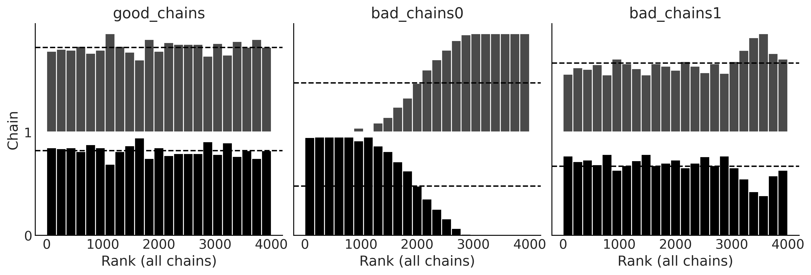
Code 2.11 and Figure 2.13¶
az.plot_rank(chains, kind="vlines", figsize=(12, 4))
plt.savefig('img/chp02/rank_plot_vlines.png')
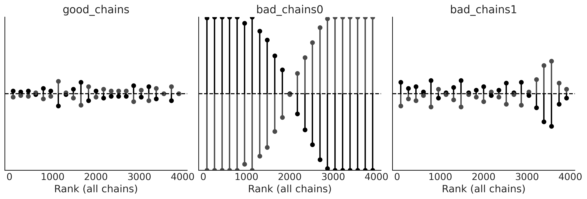
Code 2.12, 2.13, and 2.14¶
with pm.Model() as model_0:
θ1 = pm.Normal("θ1", 0, 1, testval=0.1)
θ2 = pm.Uniform("θ2", -θ1, θ1)
idata_0 = pm.sample(return_inferencedata=True)
with pm.Model() as model_1:
θ1 = pm.HalfNormal("θ1", 1 / (2/np.pi)**0.5)
θ2 = pm.Uniform("θ2", -θ1, θ1)
idata_1 = pm.sample(return_inferencedata=True)
with pm.Model() as model_1bis:
θ1 = pm.HalfNormal("θ1", 1 / (2/np.pi)**0.5)
θ2 = pm.Uniform("θ2", -θ1, θ1)
idata_1bis = pm.sample(return_inferencedata=True, target_accept=0.95)
idatas = [idata_0, idata_1, idata_1bis]
Auto-assigning NUTS sampler...
Initializing NUTS using jitter+adapt_diag...
Multiprocess sampling (4 chains in 4 jobs)
NUTS: [θ2, θ1]
100.00% [8000/8000 00:01<00:00 Sampling 4 chains, 2,300 divergences]
Sampling 4 chains for 1_000 tune and 1_000 draw iterations (4_000 + 4_000 draws total) took 2 seconds.
There were 503 divergences after tuning. Increase `target_accept` or reparameterize.
There were 579 divergences after tuning. Increase `target_accept` or reparameterize.
There were 614 divergences after tuning. Increase `target_accept` or reparameterize.
There were 604 divergences after tuning. Increase `target_accept` or reparameterize.
The number of effective samples is smaller than 25% for some parameters.
Auto-assigning NUTS sampler...
Initializing NUTS using jitter+adapt_diag...
Multiprocess sampling (4 chains in 4 jobs)
NUTS: [θ2, θ1]
100.00% [8000/8000 00:01<00:00 Sampling 4 chains, 6 divergences]
Sampling 4 chains for 1_000 tune and 1_000 draw iterations (4_000 + 4_000 draws total) took 2 seconds.
There was 1 divergence after tuning. Increase `target_accept` or reparameterize.
There was 1 divergence after tuning. Increase `target_accept` or reparameterize.
The acceptance probability does not match the target. It is 0.8922895133642398, but should be close to 0.8. Try to increase the number of tuning steps.
There were 4 divergences after tuning. Increase `target_accept` or reparameterize.
Auto-assigning NUTS sampler...
Initializing NUTS using jitter+adapt_diag...
Multiprocess sampling (4 chains in 4 jobs)
NUTS: [θ2, θ1]
100.00% [8000/8000 00:02<00:00 Sampling 4 chains, 0 divergences]
Sampling 4 chains for 1_000 tune and 1_000 draw iterations (4_000 + 4_000 draws total) took 2 seconds.
Figure 2.14¶
fig, axes = plt.subplots(6, 2, figsize=(10, 10))
axes = axes.reshape(3, 2, 2)
for idata, ax, color in zip(idatas, axes, ["0.95", "1", "0.95"]):
az.plot_trace(idata, kind="rank_vlines", axes=ax);
[ax_.set_facecolor(color) for ax_ in ax.ravel()]
fig.text(0.45, 1, s="model 0", fontsize=16)
fig.text(0.45, 0.67, s="model 1", fontsize=16)
fig.text(0.45, 0.33, s="model 1bis", fontsize=16)
plt.savefig("img/chp02/divergences_trace.png", bbox_inches="tight")
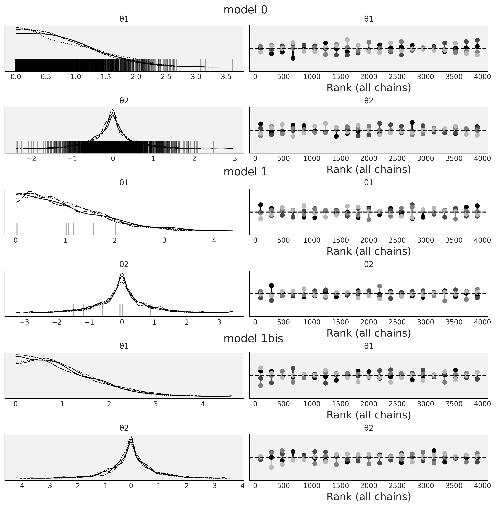
Figure 2.15¶
_, axes = plt.subplots(1, 3, figsize=(12, 5), sharex=True, sharey=True)
for idata, ax, model in zip(idatas, axes, ["model 0", "model 1", "model 1bis"]):
az.plot_pair(idata, divergences=True, scatter_kwargs={"color":"C1"}, divergences_kwargs={"color":"C4"}, ax=ax)
ax.set_xlabel("")
ax.set_ylabel("")
ax.set_title(model)
axes[0].set_ylabel('θ2', rotation=0, labelpad=15)
axes[1].set_xlabel('θ1', labelpad=10)
plt.savefig("img/chp02/divergences_pair.png")

Model Comparison¶
Code 2.15¶
np.random.seed(90210)
y_obs = np.random.normal(0, 1, size=100)
idatas_cmp = {}
with pm.Model() as mA:
σ = pm.HalfNormal("σ", 1)
y = pm.SkewNormal("y", 0, σ, alpha=1, observed=y_obs)
idataA = pm.sample(return_inferencedata=True)
idataA.add_groups({"posterior_predictive": {"y":pm.sample_posterior_predictive(idataA)["y"][None,:]}})
idatas_cmp["mA"] = idataA
with pm.Model() as mB:
σ = pm.HalfNormal("σ", 1)
y = pm.Normal("y", 0, σ, observed=y_obs)
idataB = pm.sample(return_inferencedata=True)
idataB.add_groups({"posterior_predictive": {"y":pm.sample_posterior_predictive(idataB)["y"][None,:]}})
idatas_cmp["mB"] = idataB
with pm.Model() as mC:
μ = pm.Normal("μ", 0, 1)
σ = pm.HalfNormal("σ", 1)
y = pm.Normal("y", μ, σ, observed=y_obs)
idataC = pm.sample(return_inferencedata=True)
idataC.add_groups({"posterior_predictive": {"y":pm.sample_posterior_predictive(idataC)["y"][None,:]}})
idatas_cmp["mC"] = idataC
Auto-assigning NUTS sampler...
Initializing NUTS using jitter+adapt_diag...
Multiprocess sampling (4 chains in 4 jobs)
NUTS: [σ]
100.00% [8000/8000 00:01<00:00 Sampling 4 chains, 0 divergences]
Sampling 4 chains for 1_000 tune and 1_000 draw iterations (4_000 + 4_000 draws total) took 2 seconds.
100.00% [4000/4000 00:04<00:00]
Auto-assigning NUTS sampler...
Initializing NUTS using jitter+adapt_diag...
Multiprocess sampling (4 chains in 4 jobs)
NUTS: [σ]
100.00% [8000/8000 00:01<00:00 Sampling 4 chains, 0 divergences]
Sampling 4 chains for 1_000 tune and 1_000 draw iterations (4_000 + 4_000 draws total) took 2 seconds.
100.00% [4000/4000 00:03<00:00]
Auto-assigning NUTS sampler...
Initializing NUTS using jitter+adapt_diag...
Multiprocess sampling (4 chains in 4 jobs)
NUTS: [σ, μ]
100.00% [8000/8000 00:01<00:00 Sampling 4 chains, 0 divergences]
Sampling 4 chains for 1_000 tune and 1_000 draw iterations (4_000 + 4_000 draws total) took 2 seconds.
100.00% [4000/4000 00:03<00:00]
#3# Table 2.1
cmp = az.compare(idatas_cmp)
cmp.round(2)
/u/32/martino5/unix/anaconda3/envs/pymcv3/lib/python3.9/site-packages/arviz/stats/stats.py:145: UserWarning: The default method used to estimate the weights for each model,has changed from BB-pseudo-BMA to stacking
warnings.warn(
| rank | loo | p_loo | d_loo | weight | se | dse | warning | loo_scale | |
|---|---|---|---|---|---|---|---|---|---|
| mB | 0 | -137.83 | 0.92 | 0.00 | 1.0 | 7.07 | 0.00 | False | log |
| mC | 1 | -138.57 | 1.99 | 0.74 | 0.0 | 7.03 | 0.83 | False | log |
| mA | 2 | -168.02 | 1.32 | 30.20 | 0.0 | 10.34 | 6.55 | False | log |
Figure 2.16¶
az.plot_compare(cmp, figsize=(9, 3))
plt.savefig("img/chp02/compare_dummy.png")
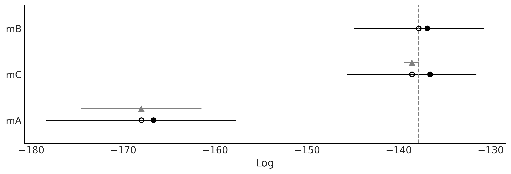
Figure 2.17¶
az.plot_elpd(idatas_cmp, figsize=(10, 5), plot_kwargs={"marker":"."}, threshold=2);
plt.savefig("img/chp02/elpd_dummy.png")

Figure 2.18¶
_, axes = plt.subplots(1, 3, figsize=(12, 4), sharey=True)
for idx, (model, ax) in enumerate(zip(("mA", "mB", "mC"), axes)):
loo_ = az.loo(idatas_cmp[model], pointwise=True)
az.plot_khat(loo_, ax=ax, threshold=0.09, show_hlines=True, hlines_kwargs={"hlines":0.09, "ls":"--"})
ax.set_title(model)
if idx:
axes[idx].set_ylabel("")
if not idx % 2:
axes[idx].set_xlabel("")
plt.savefig("img/chp02/loo_k_dummy.png")
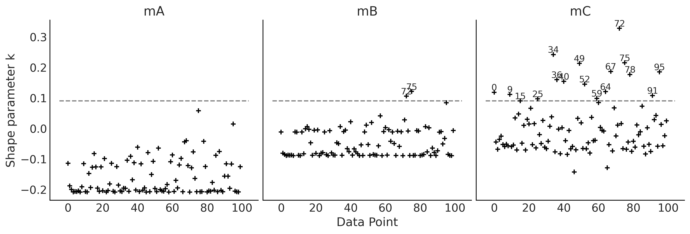
Figure 2.19¶
az.plot_kde(y_obs, rug=True)
plt.yticks([])
for da, loc in zip([34, 49, 72, 75, 95], [-0.065, -0.05, -0.065, -0.065, -0.065]):
plt.text(y_obs[da], loc, f"{da}")
plt.text(y_obs[78], loc, "78", fontweight='bold');
plt.savefig("img/chp02/elpd_and_khat.png")
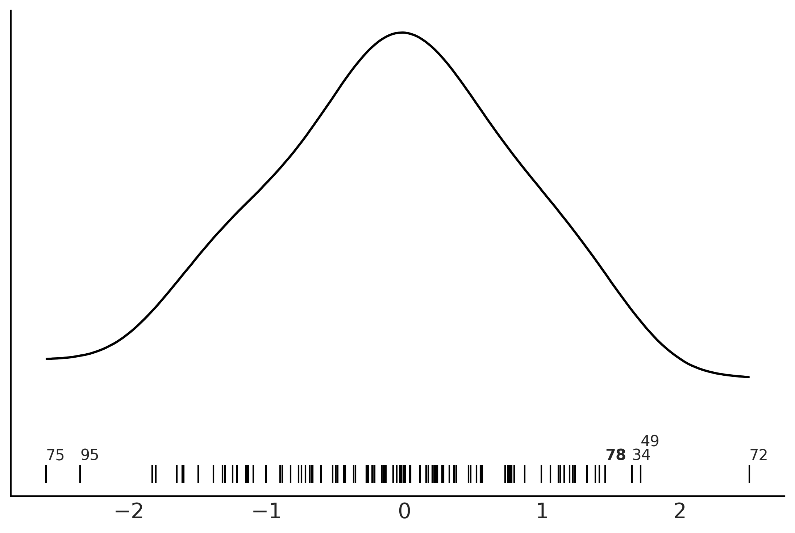
Figure 2.20¶
_, axes = plt.subplots(1, 3, figsize=(12, 4), sharey=True)
for model, ax in zip(("mA", "mB", "mC"), axes):
az.plot_loo_pit(idatas_cmp[model], y="y", legend=False, use_hdi=True, ax=ax)
ax.set_title(model)
ax.set_xticks([0, 0.5, 1])
ax.set_yticks([0, 1, 2])
plt.savefig("img/chp02/loo_pit_dummy.png")
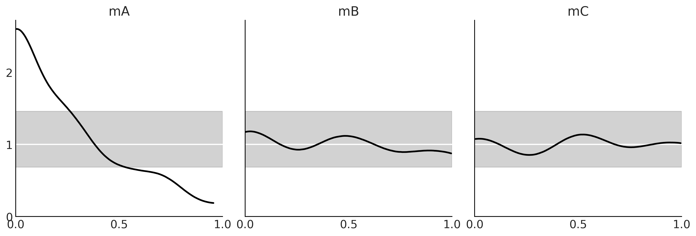